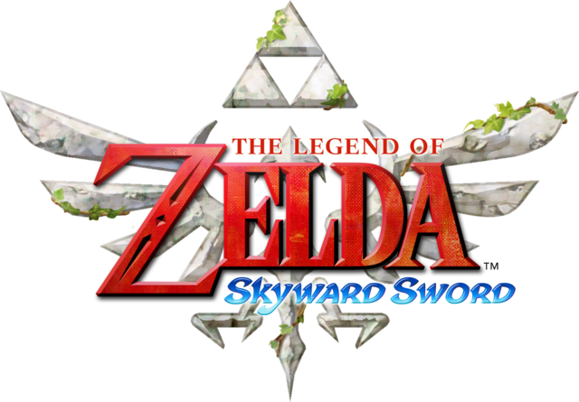
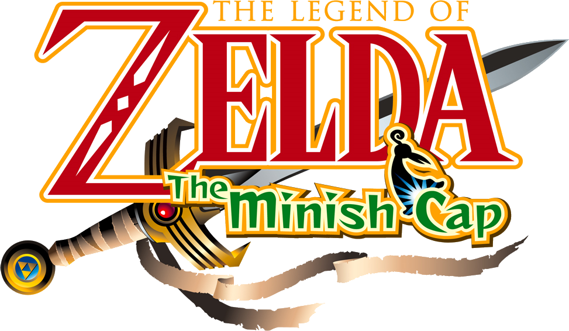
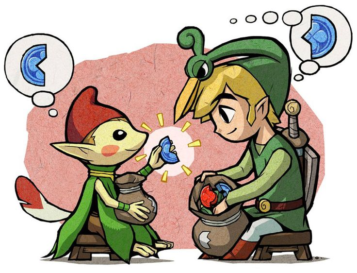
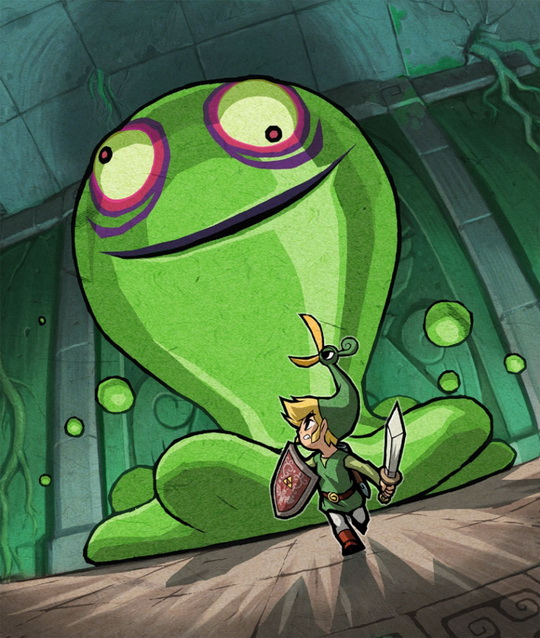
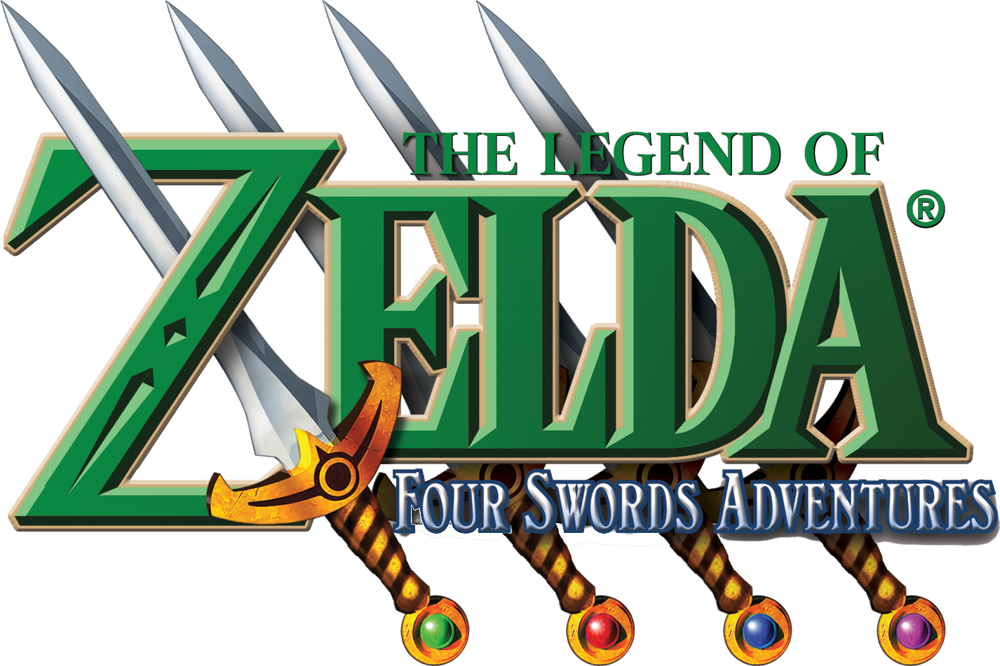
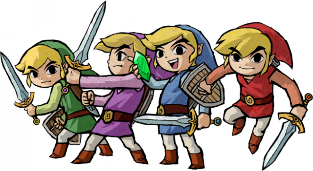
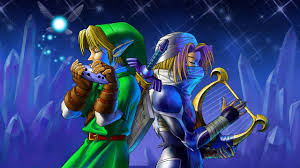

Age of Gods

Skyward Sword
Skyward Sword is the first in the timeline of the Legend of Zelda series, and establishes the origins of the master sword and the reasons behind the trio of main characters to clash together again and again every few centuries or so.
According to this game’s legend, three ancient Goddesses created the Triforce: a power capable of granting any wish. A Demon King named Demise desired the Triforce, and destroyed the land in his quest for it. The Goddess Hylia gathered the remaining people on a giant outcrop of rock and sent it into the sky beyond the clouds, allowing her to launch a full-scale offensive against Demise allied with the land's remaining benevolent races. She was victorious, but the land was severely damaged. Uncounted years later, the outcrop is known under the name of Skyloft, and its people believe the "Surface" below the clouds is a myth.

This incarnation of Link reveals himself to be the hero of legend when he pulls the Goddess Sword out of the pedestal at the base of his home island’s Goddess Statue. Zelda, his best friend, tells him that she is the mortal reincarnation of Hylia, who could not kill Demise but chose Link while as a mortal to wield the Triforce in her place. Upon his defeat, Demise places a curse upon Link and Zelda that their descendants would be haunted by Demise’s own reincarnated rage.
The game ends with Zelda deciding to remain on the Surface to watch over the Triforce: she and Link together establish the kingdom of Hyrule.

The Minish Cap
Many centuires later...
The Legend of this current realm: Evil spirits appeared in the kingdom of Hyrule and to protect the land, the tiny Picori descended from the skies and chose to give a human a golden light and a sword. This hero used courage, his golden power, and his sword to fight off the demons and restore peace.
The people were grateful to the Picori so they held an annual celebration in their honor. The tradition of the Picori Festival continued, but over the generations, the Picori themselves passed into legend. The legend of the Picori tells of a doorway that opens once every hundred years. When the door is open, the Picori can cross from their world into Hyrule.
One year, in celebration of when the Picori last came to Hyrule 100 years ago, the festival was unusually grand. That year’s champion of the Sword Fighting Tournement was a mysterious man by the name of Vaati. He won the tournament with ease and all of Hyrule was abuzz with rumors about this shadowy figure. The young Link, who attended the festival that year with his friend, Princess Zelda, was charged by his grandfather with delivering a sword that would be presented to the champion.

During the ceremony following the sword competition, Vaati shattered the sacred Picori Blade and opened the Bound Chest, which had been sealed by the Picori Blade, trapping evil monsters within. Vaati was after the Light Force, that golden light that was once wielded by the hero mentioned in the legends of the Picori. He subdued the castle guards and turned Princess Zelda to stone before making a speedy departure. Vaati was a Minish, an apprentice of Ezlo, who was also a Minish. Ezlo had made a magical cap with the power to grant wishes, but Vaati had stolen it and used it to become a powerful sorcerer. He had transformed Ezlo into a hat himself, then proceeded to hunt down the Light Force. Link was then asked by King Daltus to seek out the Picori and ask them to reforge the sacred blade, and traveled to the Minish Woods with the help of a map. There he met Ezlo, a curious creature who he rescued from a group of monsters. Ezlo hopped on his head and offered to help him find the Picori. He also helped Link shrink down to a minuscule size — the size of the Picori people, who called themselves the Minish. Link met with the elder of Minish Village, who told him that in order to reforge the sacred sword he would require the four Elements, the sacred powers of earth, fire, water, and wind.
Once he had gathered the Four Elements, he brought now renamed blade, the White Sword, to the Elemental Sanctuary hidden within the courtyard of Hyrule Castle. There he infused the White Sword with the Elements, fully restoring the sacred Four Sword — a legendary blade with the power to split one warrior into four.

Meanwhile, Vaati had brainwashed King Daltus and shrouded Hyrule Castle in darkness. He had discovered that the sacred Light Force had actually been passed down through Hyrule’s princesses, and so he prepared to extract the Light Force from Princess Zelda. After vanquishing Vaati, Link used the Four Sword’s evil-banishing power to restore Princess Zelda.
Now that the land of the humans had been saved, Ezlo ventured back into the world of the Minish through the Minish Door, not to return until perhaps the next day, one hundred years later, when the doorway to their world would open once more.

Four Swords
In the next hundred years after the previous events, Vaati could bend the wind to his will and used this awful power to terrorize many villages of Hyrule. In his assaults on the villages, Vaati would kidnap any beautiful girls who caught his fancy.
Many knights from the castle and other brave men set out to subdue the sorcerer and rescue the girls, but each one fell in turn to Vaati's awesome power. Just as the people had begun to lose hope, a lone young boy traveling with little but a sword at his side appeared.
When this boy heard what was happening, he boldly entered Vaati's palace, trapped the evil sorcerer inside the blade of his sword, and returned the young girls to their villages. The boy then went deep into the forest and disappeared.

The villagers asked the girls how a boy so young could have saved them all and defeated the sorcerer when no one else could. The young girls told a story of how with just a wave of his sword, the boy's body shattered into four pieces, each of which then formed a complete copy of the boy. These four young boys then worked together to defeat the sorcerer. The people did not believe the story, but they called it the Four Sword nonetheless. As rumors of the blade's power to divide a person into four entities spread, the people built a shrine to protect it.
Princess Zelda in this period was a beautiful young girl born with mysterious power to sense approaching forces of evil. One day she asked a boy named Link to accompany her to investigate some strange happenings at the shrine of the Four Sword.
As they approached the shrine, a dark figure grabbed princess Zelda. The seal on Vaati had weakened over time, and Vaati managed to break out of his prison within the Four Sword. Having no memory of his time as a Picori, or the power of the Light Force, Vaati did not recognize the princess and saw only a fair maiden. He decided she was to become his bride to commemorate his return and took off with her to his palace. After being instructed by fairies, Link removed the Four Sword from its pedestal and was split into four, as the legend foretold. Link and his three other selves confronted the wind mage in the Palace of Winds. After an arduous battle between the sorcerer and the heroes, Link was able to reseal Vaati into the Four Sword blade.

Ocarina of Time
About ten years before the story of this age began, there was a war known as the Hyrulean Civil War which gives backstory to many characters motives.
In the Kokiri Forest, all the forest children have their own guardian Fairies, except for one boy. This version of young Link had been plagued by nightmares of a girl fleeing from an evil man clad in black. For as long as he could remember, the boy had never quite fit in. One day, as the Great Deku Tree neared death, he sent Navi the fairy to summon the boy to him. In order to test young Link’s courage, the Great Deku Tree instructed Link to venture inside his hollow and break the death curse cast upon him by a wicked man dressed in black. Link complies, but his efforts are for naught; the Great Deku Tree's death was sealed before Link's attempt had even begun. With his final breath, the Great Deku Tree bestows upon Link the Spiritual Stone of the Forest and entreats him to travel to Hyrule Castle and seek an audience with Princess Zelda
Princess Zelda warns Link about Ganondorf and his evil intention to steal the Triforce from the Sacred Realm. Zelda insists that Link track down the other two Spiritual Stones, so that they might beat Ganondorf to the Triforce and put an end to his plot.

Link succeeds in aquireing the other two Spiritual Stones, but when he returns to Hyrule Castle to inform Zelda of his success, only to witness his nightmare come to pass. Ganondorf attacked Hyrule Castle in an attempt to steal the Ocarina of Time, and Princess Zelda was forced to flee with her loyal attendant Impa in order to keep the sacred relic from Ganondorf’s hands. As she passes Link on the drawbridge of Hyrule Castle Town, she throws the ocarina into the moat to give him the chance to enter the Sacred Realm and retrieve the Triforce. In hot pursuit, Ganondorf charges across the drawbridge, blasting Link with dark magic when he tries to stand in his way. Dismissing Link as no credible threat to his power, Ganondorf speeds off in his pursuit of the princess
When Link retrieves the Ocarina of Time from the moat, he receives a telepathic message from Zelda, bidding him to play the Song of Time in front of the Temple of Time's altar. Link makes his way to the Temple of Time, and proceeds to use the four keys to open the Door of Time. Beyond it lies the Master Sword resting in the Pedestal of Time. Link draws the blade, unlocking the gateway to the Sacred Realm. But then the Master Sword, though accepting Link as its wielder, seals him away in the Sacred Realm. Ganondorf, who had suspected that Link might have already held the keys to the Sacred Realm, mocks him for practically giving him the Triforce. Link watches helplessly as Ganondorf passes him by and crosses over into the Sacred Realm.